제과쇼케이스
베이커리 전기요금, 냉장 장비에서 새는 전기부터 잡는 법
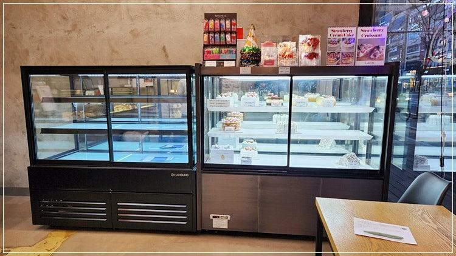
베이커리 전기요금을 줄이려면 쉬는 시간이 없는 냉장 장비부터 보셔야 합니다. 응축기에 쌓인 밀가루 먼지를 정기적으로 털고, 제과쇼케이스를 오븐 열기에서 떨어뜨리고, 문 여는 횟수와 야간 조명을 줄이는 것만으로도 콤프레셔가 덜 돌게 됩니다.
안녕하세요. 제과점과 카페용 쇼케이스를 직접 설계하고 만드는 한성쇼케이스입니다.
베이커리를 운영하시는 사장님들께 전기요금 고지서는 매달 마음이 무거운 종이입니다. 대부분 오븐 탓이라고 생각하시는데, 오븐은 굽는 시간에만 돌지만 냉장 장비는 밤낮없이 켜져 있다는 점을 놓치기 쉽습니다.
반죽 냉장고, 냉동고, 손님 앞 제과쇼케이스까지 베이커리에는 쉬지 않는 장비가 여러 대입니다. 이 장비들이 필요 이상으로 오래 돌면 그 차이가 그대로 요금에 쌓이죠.
오늘은 베이커리 전기요금을 냉장 장비 중심으로 점검하는 방법을 정리해 드리겠습니다. 비용을 들이지 않고 오늘 바로 해 볼 수 있는 것부터 장비를 고를 때 볼 것까지 순서대로 담았습니다.
1. 밀가루 먼지가 응축기를 막습니다
베이커리는 공기 중에 밀가루 분진이 많아 냉장 장비 아래쪽이나 뒤쪽의 응축기 필터가 다른 업종보다 훨씬 빨리 막힙니다.
응축기가 막히면 열을 내보내지 못해 콤프레셔가 같은 온도를 맞추려고 더 오래 돌게 됩니다.
전원을 끈 뒤 부드러운 솔로 필터와 응축기 표면 먼지를 털어 내 주세요. 밀가루를 많이 쓰는 주방 쪽 장비일수록 청소 주기를 짧게 잡는 것이 좋습니다.
- 응축기 필터 먼지 정기 청소
- 반죽 작업대 옆 장비부터 우선 점검
- 장비 뒤 벽과 간격 확보
2. 오븐 열기와 거리 두기
매장이 좁다 보면 제과쇼케이스나 냉동고가 오븐 바로 옆에 붙는 경우가 있습니다. 주변 온도가 높으면 냉장 장비는 그만큼 더 일해야 하고, 여름철에는 냉각이 버거워 설정 온도를 지키지 못하기도 합니다.
배치를 바꾸기 어렵다면 오븐 배기 방향이 냉장 장비 쪽으로 향하지 않게 하고, 둘 사이에 열을 막아 주는 칸막이를 두는 것도 방법입니다.
창가 햇빛이 쇼케이스 유리에 하루 종일 닿는 자리도 같은 이유로 피하는 것이 좋습니다.
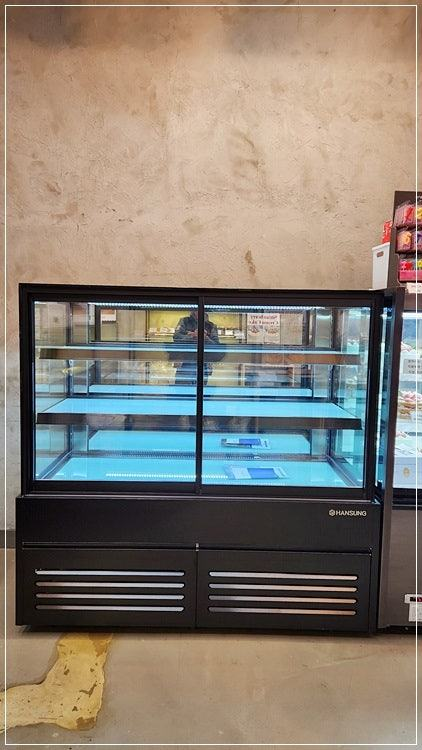
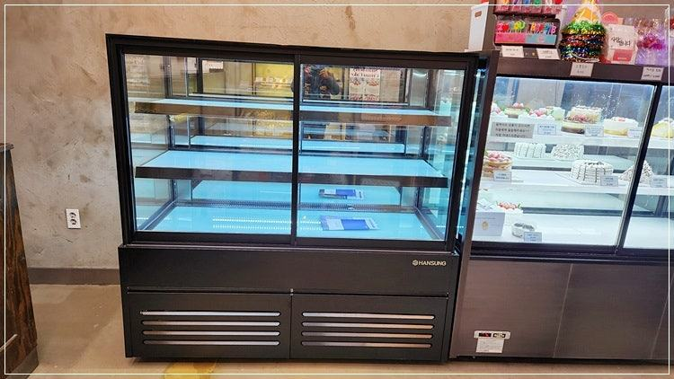
3. 문 방식과 여는 횟수
손님이 직접 문을 열어 꺼내는 앞문형 제과쇼케이스는 고르는 동안 문이 열려 있는 시간이 길어지기 쉽습니다.
손님이 들여다보며 고를 수 있도록 내부가 잘 보이게 진열하고, 자주 팔리는 품목은 문 가까운 칸에 두면 열려 있는 시간이 줄어듭니다.
직원이 꺼내 주는 매장이라면 뒷문형이 냉기 손실 면에서 유리합니다. 문 패킹이 들뜨거나 찢어진 곳이 있으면 문을 닫아도 냉기가 새니 한 달에 한 번은 손으로 눌러 확인해 보세요.
4. 마감 후와 장비 선택
영업이 끝난 뒤에도 쇼케이스 조명이 밤새 켜져 있는 매장이 많습니다. 조명은 열도 내기 때문에 끄는 것만으로 냉장 부담이 줄어듭니다.
마감 후 비어 있는 진열 칸은 제품을 작업실 냉장고로 옮기고 운영을 줄이는 방법도 검토해 보세요.
장비를 새로 고를 때는 콤프레셔 효율과 단열 구조, 냉기가 제품에 고르게 도는 구조인지 확인하세요. 설정 온도를 필요 이상으로 낮춰 두는 습관도 요금을 올리니 제품별 적정 범위를 정해 두시는 게 좋습니다.
- 마감 후 쇼케이스 조명 끄기
- 설정 온도 과하게 낮추지 않기
- 콤프레셔 효율과 단열 구조 확인
체크리스트
- 응축기 밀가루 먼지 청소
- 오븐·햇빛과 냉장 장비 거리
- 문 패킹 상태
- 자주 팔리는 품목은 문 가까이
- 마감 후 조명 끄기
- 설정 온도 점검
첫 창업 대표님과 오래 상담해 맞춘 앞문형 제과쇼케이스
제과점을 처음 여시는 대표님 의뢰로 앞문형 제과쇼케이스를 제작한 사례입니다. 첫 창업이라 무척 신중하셔서 상담이 꽤 길게 이어졌고, 작은 미니쇼케이스라도 직접 이야기를 나누며 필요한 부분을 하나씩 확인했습니다.
앞문형은 판매하는 사람뿐 아니라 손님도 직접 문을 열고 들여다보며 고르는 냉장고라, 매장에서 보이는 디자인과 실제로 쓰기 편한 기능을 함께 반영했습니다.
쇼케이스 전문 디자이너가 업종에 맞는 구성을 설계하고, 생산과 품질 테스트를 거쳐 설치까지 진행했습니다.
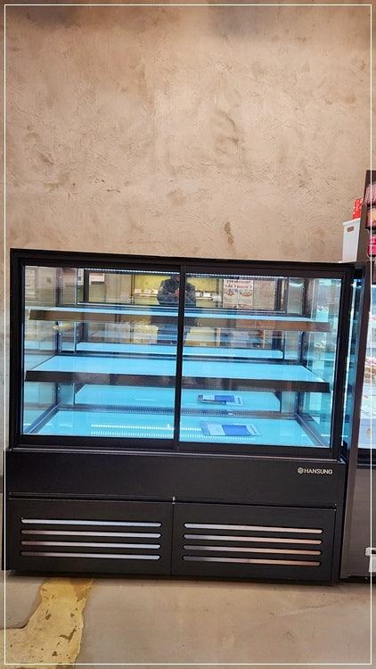
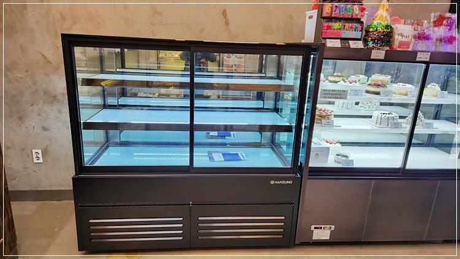
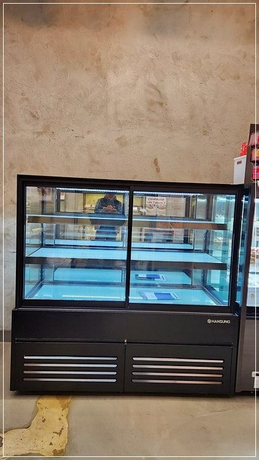
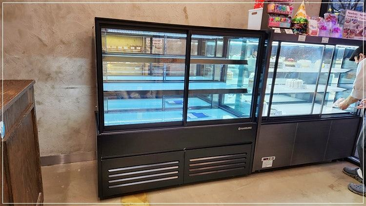
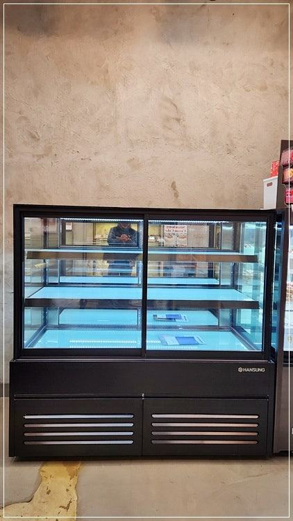
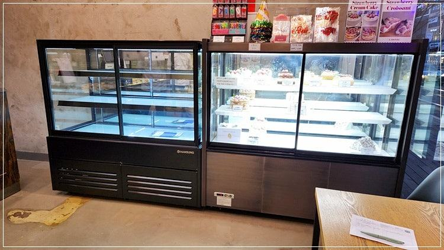
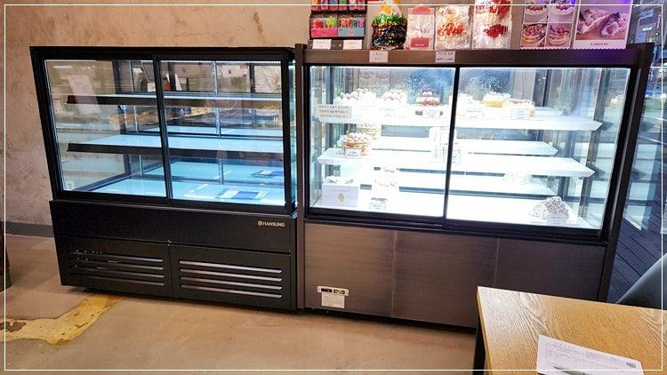
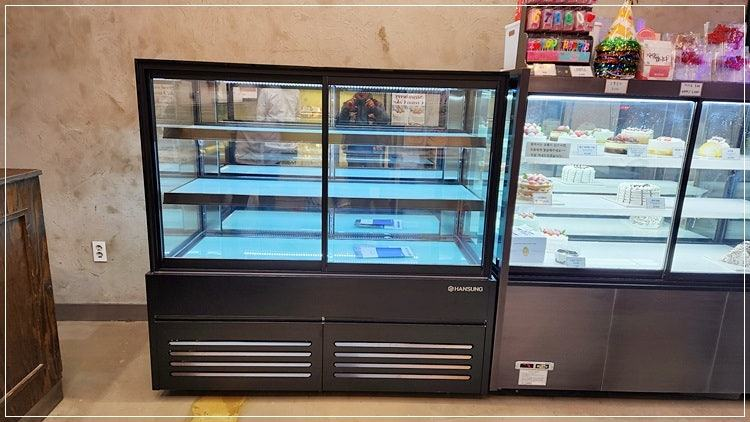
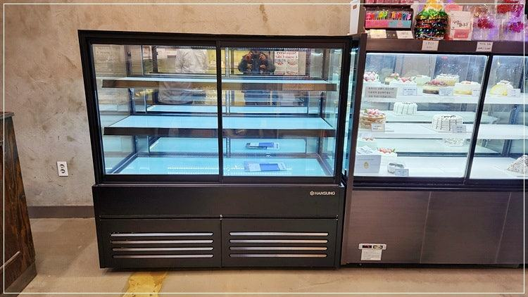

자주 묻는 질문
제과쇼케이스를 밤에 꺼 두면 전기요금이 줄까요?
비워 둔 칸이라면 줄일 수 있지만, 다시 켤 때 온도를 내리느라 전기를 쓰고 내부에 결로가 생길 수 있습니다.
제품을 옮길 수 있는지, 다음 날 몇 시에 채우는지를 보고 정하시는 게 좋습니다.
응축기 청소는 직접 해도 되나요?
전원을 끈 상태에서 겉의 필터와 먼지를 털어 내는 정도는 직접 하셔도 됩니다. 안쪽 부품까지 분해해야 하는 청소나 냉각 이상이 함께 있다면 A/S 점검을 받으세요.
오래된 쇼케이스를 바꾸면 전기요금이 확실히 줄어드나요?
장비 상태와 사용 환경에 따라 달라 일정하게 말씀드리기 어렵습니다. 콤프레셔가 쉬지 않고 돌거나 성에가 자주 낀다면 효율이 떨어진 상태일 수 있으니 수리와 교체를 함께 비교해 보세요.
매장 조건에 맞춰 만드는 한성쇼케이스
원하시는 제품 사진과 설치할 공간 사진만 보내 주셔도 매장에 맞는 구성을 추천해 드립니다.
- 전국 240여 개 A/S 전담 센터 운영
- 본사 대량 자재 매입으로 품질 대비 합리적인 가격
- 유럽제·삼성 냉각 콤프레셔 적용
- 국내 최초 쇼케이스 전문 디자이너 상주
매장 폭과 원하는 진열 구성을 알려 주세요. 실측과 견적을 안내해 드립니다.
031-986-2458